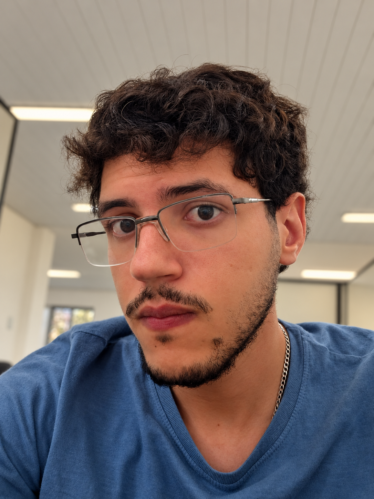

Nao há como eu começar minha apresentação sem antes mencionar minha paixao por tecnologia. Desde de crianca eu demonstrava interesse por coisas tecnologicas, que fosse um robo de brinquedo, um carrinho de controle remoto ou ate mesmo moto de brinquedo eletrica. Adorava fuçar tudo, a bateria, as telas, botoes, as articulacoes dos brinquedos... sim eu desmontava tudo e quebrava meus brinquedos no processo, mas da um tempo! So era uma crianca curiosa. Um grande marco foi quando tive meu primeiro celular, foi um nokia 1661, devido a curiosidade que sempre tive eu descobri sozinho que tinha jogos nele, o meu favorito era o jogo da cobrinha! Minha paixao por video game nasceu dai tambem! Devido a essa curiosidade, eu sempre tive facilidade em manusear eletronicos e nas interfaces deles, o que me fez criar gosto pela tecnologia, meu eu crianca achava divertido. Tempo vai e tempo vem e cheguei na adolescencia. No meu 8° ano do ensino fundamental 2 fui apresentado a programacao nas minhas aulas de informatica! Conheci através do scratch e do conjunto make da Lego educantion, obviamente eu tirava de letra! Era fisicamente impossivel eu nao adorar as aulas de informatica em minha escola. E gracas a essas aulas eu tive meu primeiro contato com a programacao! Com tudo isso, nao preciso nem dizer que desde de que me conheco como Heitor Givercy eu sabia quem eu queria ser quando crescesse: Alguem que vivesse ao redor de tecnolgia! Software, hardware, firmware, programas, API's... E aqui estou eu indo em busca de cumprir objetivo de vida, me desenvolver o suficiente ao ponto de conseguir criar e manipular quaisquer tipo de software, os quais sao essenciais para a manutencao da vida das pessoas na era contemporanea.
Meus gostos sao: Adoro video games do genero de mundo aberto e competitivo, gosto de anime, como dragon ball, Demon Slayer, Attack on titan e entre outros, gosto de malhar, gosto de praticar karate e adoro ir para a praia
| Segunda-feira | Terça-feira | Quarta-feira | Quinta-feira | Sexta-feira | Sabado | Domingo |
|---|---|---|---|---|---|---|
| Acordar | Acordar | Acordar | Acordar | Acordar | Acordar | Acordar |
| Estudo na Faculdade | Estudo na Faculdade | Estudo na Faculdade | Estudo na Faculdade | Estudo na Faculdade | descanso | Estudo por fora/Resolver pendencias da Faculdade + academia |
| Estudo em casa | Estudo em casa + academia | Estudo na Faculdade | Estudo em casa + academia | Estudo em casa | Descanso + academia | Estudo por fora/Resolver pendencias da Faculdade |
| karate + estudo em casa | Estudo em casa | karate + estudo em casa | Estudo em casa | karate + estudo em casa | Descanso | Descanso |
| Dormir | Dormir | Dormir | Dormir | Dormir | Dormir | Dormir |